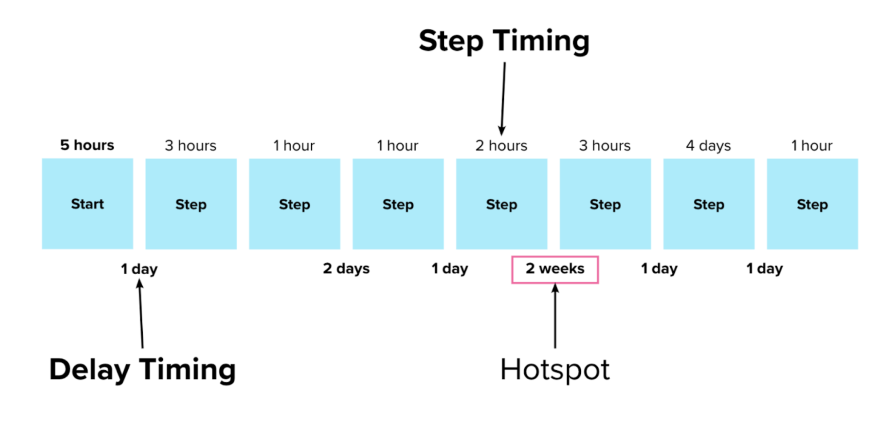
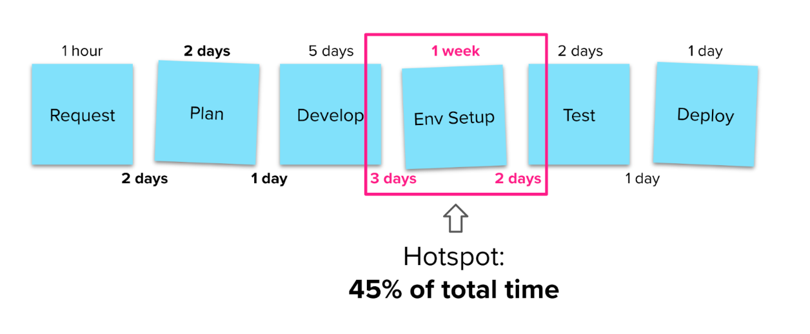
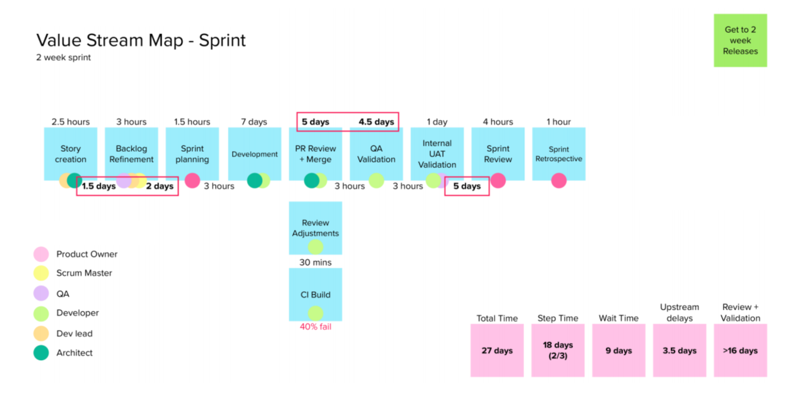

Value Stream Mapping (Part of Flow Engineering)
Use visualization to help stakeholders identify opportunities to improve the way they work together to deliver customer value (40-50 min)
What is made possible?
Teams and individuals often operate within a narrow segment of a value stream, the complete, end-to-end workflow that results in a valuable result for customers. This makes it hard for those contributors to grasp the impact and interdependencies in their work, and leads to narrow attempts at improvement that fail to improve the whole system. Any value stream will have a single rate-limiting stage that constrains the overall flow of value delivered. Value stream mapping is a collaborative visualization exercise that reveals this constraint along with other impactful improvement opportunities. This exercise pairs visualization with performance measurement using qualitative and quantitative data. The resulting value stream map serves as a shared, visual representation of the work process that is a focal point for team discussions around performance improvement.
1. Structuring Invitation
Invite representative stakeholders involved in a common value stream to come together to identify improvements to the overall flow. The group maps a path to addressing key questions:
- What sequence of activities constitute the complete workflow?
- What is the measured performance of the complete workflow?
- What is our highest impact improvement opportunity?
2. How Space Is Arranged and Materials Needed
- Use a digital whiteboard or an actual whiteboard/paper & sticky notes.
- Allow for space to lay out 8-20 distinct steps horizontally.
3. How Participation Is Distributed
- Up 3-5 representatives of the key contributors to the value stream.[a][b]
- Beyond 5, groups can be split out and reconvene
- Everyone participates according to their knowledge of the step in question and the value stream overall.
4. How Groups Are Configured
- One main notetaker builds the value stream map on a shared whiteboard
- Other contributors discuss to add, remove, or amend aspects of that shared map
5. Sequence of Steps and Time Allocation
- The whole group works backwards from ‘value delivered’, plot each distinct step (as a note or item) in sequence back to the start of the value stream (the request that triggered the work). (10 min)
- Estimate the typical timing for each step and write this above that step (10 min)
- Estimate the typical delay between each step, and write this underneath the gap between steps (10 min)
- Add up the total amount of working time from all steps and the total waiting time between steps. Sum these to determine the end-to-end process duration. (2 min)
- Highlight working or waiting times with the longest durations as possible improvement candidates (2 min)
- Discuss as a group to identify the improvement candidate that would make the single biggest improvement to the end to end duration. That becomes a target for action. (5 min)
Why? Purposes
- Align the goal of customer value with actual production performance
- Orient improvements towards customer benefit
- Build a sense of purpose as contributors see how their work fits into a broader process of delighting customers
- Engage contributors in co-designing their own work process.
- Promote awareness that designing team workflow is creative process that everyone can contribute to
- Reveal hidden patterns and constraints in workflow
- Enable end-to-end optimization
- Enable data-driven decision making about workflow improvements
- Enable optimization at scales ranging from hours to years, and from individuals to organizations
- Reduce wasted time and effort
- Improve team learning by reducing the delay in getting work to customers and getting their feedback
- Promote organizational learning and adaptation
Tips and Traps
- Without a clear target outcome or objective, it’s difficult to understand what and how much detail to capture. Clarity on a target outcome helps identify the greatest opportunity for improvement or action. Use an Outcome Mapping session to help the group clarify their goals before this session.
- Including a sponsoring stakeholder can provide first-hand understanding as well as demonstrate a commitment to the improvement effort.
- Strive to represent a typical flow of the value stream. If the last iteration wasn’t anomalous, refer back to it specifically.
- Avoid allowing a few people to dominate the session, check in with those who have fallen silent to provide input, feedback, or ask questions.
- Mapping can be accelerated by providing a scaffold representing a basic known value stream structure, which is then modified by the group
- Don’t try to accommodate edge cases.
- Don’t settle on ‘it depends’ to describe a variable flow of work, target what happens most of the time or most recently.
- Don’t aim for precise measurements. Rough estimates are sufficient
- If you struggle to get input for estimation or any detail, it can help to make a guess as the facilitator, and allow the group to correct you if they can.
- Avoid referring to the value stream as it is intended to operate or will operate after improvement. Focus on the most recent iteration or a representation of several recent iterations.
- Performing the exercise with video on (if remote) to improve engagement.
- Don’t list every tangential part of the process, keep the focus on the core value stream
- Limit the scope of the value stream map to steps that are within this group’s ability to influence.
Riffs and Variations
- Expanded maps can add additional dimensions including:
- Quality: % of work done completely and accurately at each stage)
- Efficiency: Time in each stage spent on value-adding work as a percentage of total time
- Work in progress: How much work is in progress at each stage (at the present time)
- Queues: Where work items accumulate before being acted on
- Roles: Which roles are involved in each step
- Tools: Systems involved in each activity[c][d][e]
- Artifacts & deliverables: What each stage produces
- Value Stream Mapping should be performed repeatedly to periodically re-establish clarity. Once mapping is performed and improvements are implemented, the constraint is moved elsewhere, and mapping can reveal it to continue progress. This is often achieved by mapping every 3-6 months depending on the scope of improvement.
- It’s possible to parallelize the exercise by having each participant create their own representation of the value stream (and associated data). These representations can then be presented and discussed before reconciling them to a common collective representation. This allows for each contributor to provide a complete representation of their understanding and also reveals the difference between each individual perspective, capturing the most complete ‘raw data’.
- If Next Steps aren’t clear, you can use 15% Solutions to break down big challenges into actionable next steps.

The basic format of a value stream map

A Sample Value Stream Map

A Sample Completed Value Stream Map with roles represented
Attribution
Flow engineering, as described by Steve Pereira and Andrew Davis, builds on work from the Lean movement, the Toyota Production System, and authors such as Karen Martin. The Theory of Constraints is credit to Eliyahu Goldratt.
See also Outcome Mapping - Liberating Structure
More information
https://vzbl.io/floweng
[a]From Nicole Helmerich:
How do you distribute up to ten participants? If we think LS would it make sense to form groups of 3-5 people to work on the value stream mapping? I see sequences are included - how about including an iteration too. Suggestion: form groups of 3-5 people and let them work on the values stream mapping on their own in a breakout room with the respective canvas on the whiteboard. Bring this together as a whole group aftwerwards - therewith you can also better identify contradictions, different understandings etc (maybe you could think it as the steps in ecocyle where the whole group at the end needs to align?) Please keep me posted how it evolves. Have a great day!
[b]the basis of all LS is small groups between 3-5 and iteration because it allows for more inclusion of all ideas and participation of all participants. If you do this with 8-10 not everybody will contribute and speak - yous miss out on the quiet people
[c]Are these relevant for identifying process improvements?
[d]They can highlight where there are unnecessary handoffs (product owner can just do all 3 activities instead of handing off and handing off) or two many tools are involved (we enter data here and then we enter the same data here etc)
[e]Not critical dimensions but often valuable to visualize